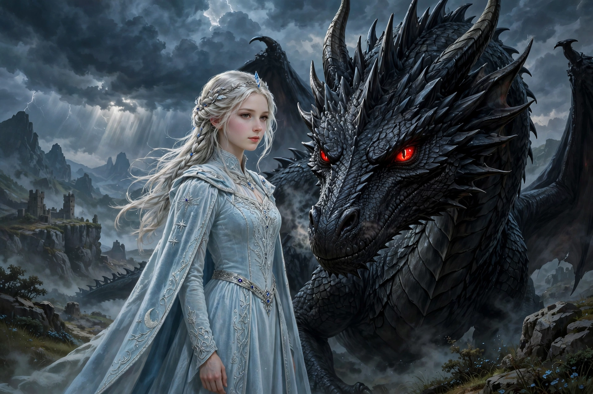

Daenerys Targaryen
| Daenerys Targaryen | |
|---|---|
| First appearance | A Game of Thrones (1996) |
| Last appearance | "The Iron Throne" (2019, television) |
| Created by | George R. R. Martin |
| Portrayed by | Emilia Clarke |
| House | Targaryen |
| Title | Queen of the Andals and the First Men; Khaleesi of the Great Grass Sea; Breaker of Chains; Mother of Dragons |
| Spouses | Khal Drogo; Hizdahr zo Loraq (novels) |
| Father | Aerys II Targaryen |

Daenerys Targaryen is a fictional character in the A Song of Ice and Fire series of fantasy novels by American author George R. R. Martin and its television adaptation Game of Thrones, in which she is portrayed by the English actress Emilia Clarke. In the novels, she is a prominent point of view character.
Daenerys is the last confirmed member of House Targaryen, the deposed royal house of Westeros. Born during a storm on the island fortress of Dragonstone, she was exiled as an infant to the Free Cities of Essos with her elder brother Viserys after their father, King Aerys II, was killed in Robert's Rebellion. Forced into marriage with the Dothraki warlord Khal Drogo, she gradually transforms from a timid, abused girl into a commanding leader. At Drogo's funeral pyre she hatches three dragons — Drogon, Rhaegal and Viserion — the first seen in the world for more than a century, earning her the name "Mother of Dragons."
In the novels
Introduced in A Game of Thrones (1996), Daenerys is thirteen years old and living in exile in Pentos, where her brother bargains her marriage to Khal Drogo in exchange for an army. After Drogo's death and the stillbirth of their son, she walks into his funeral pyre with three petrified dragon eggs and emerges unburnt with three living dragons. In A Clash of Kings she journeys through the Red Waste to Qarth, where she visits the warlocks of the House of the Undying. In A Storm of Swords she acquires an army of Unsullied soldier-eunuchs in Astapor, sacks the city, and goes on to liberate Yunkai and conquer Meereen, where in A Dance with Dragons she struggles to rule, reopen the fighting pits and resist a coalition of slaveholding powers.
In the television series
In Game of Thrones (2011–2019), Daenerys sails for Westeros in the sixth season, allies with Jon Snow against the White Walkers, and ultimately, after heavy losses, destroys much of King's Landing with dragonfire in the penultimate episode before being killed by Jon Snow in the series finale, "The Iron Throne." The character's turn to mass destruction in the final season was widely debated by critics and audiences.
Reception and analysis
Daenerys has frequently been read as a study in the corrupting effects of power, messianic self-image and hereditary claims to rule. Emilia Clarke's performance earned four Primetime Emmy Award nominations. The character's name became briefly popular for newborn girls during the show's run, and the phrase "Breaker of Chains" entered popular culture as a byword for emancipatory politics.
See also: A Song of Ice and Fire · Game of Thrones · Night's Watch